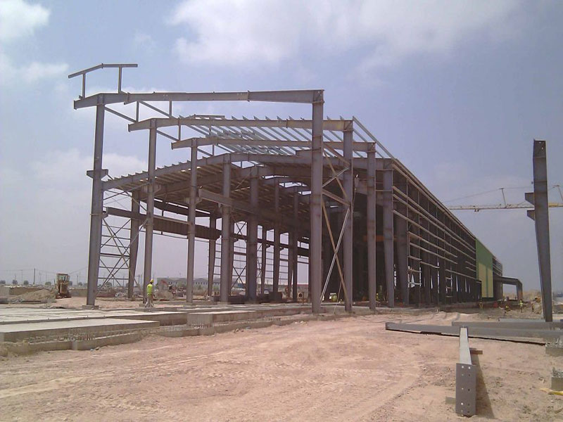
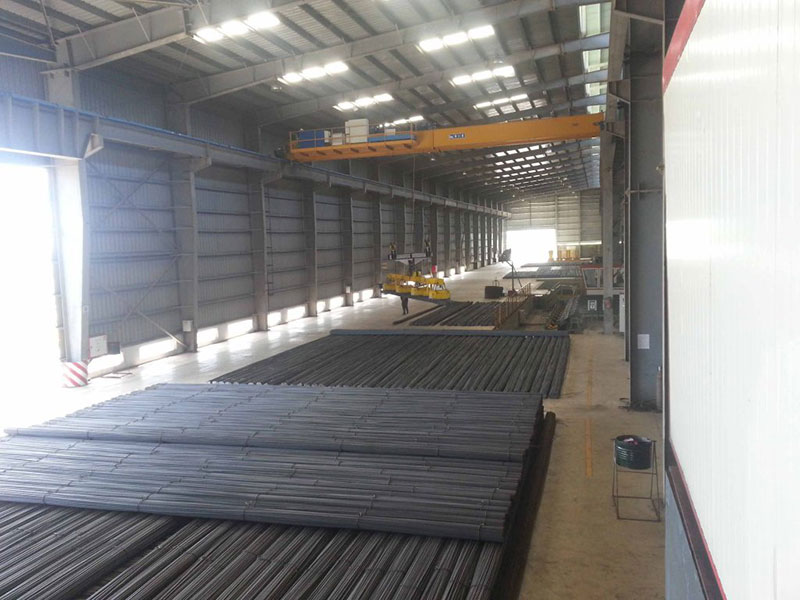

La chimie vérifiée.
Chaque production commence par le contrôle des caractéristiques qui déterminent sa fiabilité.
Maroc / bâtir avec certitude
Aciers de précision pour les systèmes qui donnent forme aux villes de demain.
Explorer la gamme ↘Universal Industrial Steel
2009
Fondée au Maroc en 2009, UISTEEL (Universal Industrial Steel) produit et commercialise du rond à béton, du fil machine et des armatures pour le secteur du bâtiment et des travaux publics. Depuis son site de Sidi Mekki à Berrechid, l’entreprise accompagne les chantiers avec une production conforme aux normes nationales et un service adapté aux besoins du terrain.
Découvrir UISTEELLa gamme UISTEEL
Le standard UISTEEL
Chaque production commence par le contrôle des caractéristiques qui déterminent sa fiabilité.
Le laminage est suivi pour garantir la régularité de la masse linéique.
Le marquage produit renforce la sécurité et l’identification de chaque lot.
Un acier prêt à entrer dans le réel, soutenu par les contrôles et certifications.
Galerie matière
Une matière exigeante, pensée pour les géométries de la construction.


L’index UISTEEL






Chaque lot produit est appelé à devenir une part du paysage construit.
Voir la galerie ↗En chiffres
UISTEEL / INDEX
Notre rôle est de sécuriser la chaîne de construction avec une production locale, des produits conformes et un accompagnement adapté aux contraintes de chaque chantier. Du choix de la nuance à la préparation des armatures, nos équipes rapprochent l’exigence industrielle des besoins du terrain.
Une production locale tournée vers le BTP
Rond à béton, fil machine et armatures
Une réponse pensée pour chaque chantier